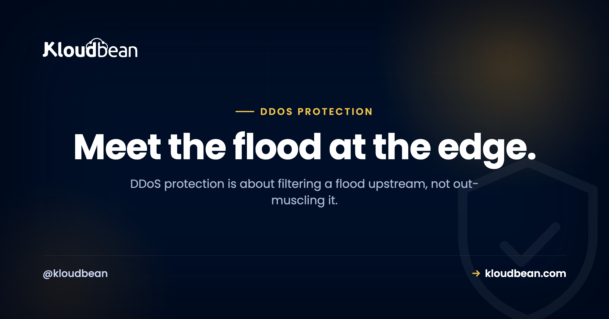

DDoS Protection Explained: How the Flood Works and How You Stop It

A DDoS attack doesn't break in. It piles up. Thousands of machines send your site traffic all at once until real visitors can't get a connection, and your app looks dead even though nothing was hacked. DDoS protection is the set of layers that soak up that flood before it ever reaches you.
Most of the advice out there is either doom ("nothing can stop it") or snake oil ("just buy our box"). The truth sits in the middle, and it's genuinely actionable once you understand where the flood gets filtered. So let's take it apart.
A DDoS attack floods your server from many sources at once to exhaust it, so real users can't get through. You don't stop it by buying a bigger server; you filter it upstream, at an edge network that absorbs volumetric floods and screens layer-7 requests, with a firewall and Fail2ban mopping up smaller abuse. Put that edge in front before you're attacked, not during.
What a DDoS attack actually is
DDoS stands for distributed denial of service. Break that down. "Denial of service" means making something unavailable. "Distributed" means the attack comes from many machines at once, usually a botnet of hijacked devices scattered across the world. Point all of them at one target, and the combined traffic swamps it.
The goal isn't to steal anything. It's to exhaust a resource: your bandwidth, your CPU, your database connections, your app's ability to answer requests. Once that resource is spent on junk, there's nothing left for real visitors. Your site isn't broken. It's just too busy drowning to say hello.
One distinction worth keeping straight. A plain DoS comes from a single source, so you can usually just block that one address. A DDoS comes from thousands, which is exactly what makes it hard. You can't block your way out of a flood coming from ten thousand different IPs by hand. That's the whole problem in one sentence.
The two shapes a DDoS takes
Attacks split into two broad families, and they're stopped in completely different ways. Knowing which one you're looking at is half the battle.
| Volumetric (Layer 3-4) | Application-layer (Layer 7) | |
|---|---|---|
| What it targets | Your network pipe, raw bandwidth | Your app: CPU, database, request handling |
| What it looks like | Obvious junk, enormous volume | Real-looking HTTP requests |
| Typical example | UDP or SYN flood, DNS amplification | Thousands of GET /search or login POSTs |
| Why it hurts | Sheer size clogs the connection | Blends in; even modest volume can exhaust the app |
| How it's stopped | Absorbed and scrubbed at the edge by huge capacity | Rate limits and a WAF spotting the pattern |
Volumetric attacks are the loud ones you see in headlines, measured in gigabits or terabits per second. Application-layer attacks are quieter and, honestly, trickier. They mimic real users, so a firewall waving traffic through can't tell the difference. A flood of legit-looking requests to an expensive endpoint (a search, a login, a report) can take down an app on far less traffic than a volumetric attack needs. Sneaky is worse than loud here.
How the defense actually works: filter at the edge
Here's the mental model that fixes most confusion. You don't fight a flood at your front door. You fight it far upstream, at an edge network with capacity vastly larger than any single server, and only clean traffic is allowed to continue to your origin.
The layers that actually stop a flood
Real DDoS protection is a stack, not a switch. Each layer catches something the others miss, so you want them working together.
- An edge / CDN network. This is the load-bearing layer for big attacks. It sits in front of your site with capacity far larger than any single origin, so it absorbs and scrubs volumetric floods before they reach you. It's the only thing that meaningfully answers a terabit-scale attack, because your server never could. It also hides your origin IP so attackers can't route around it.
- Rate limiting. A cap on how many requests one source can make in a window. Cheap and effective against crude layer-7 abuse, where a single IP or a small set hammers your login or search. It won't stop a wide botnet on its own, but it takes the easy attacks off the table.
- A WAF. A web application firewall inspects HTTP requests and blocks the ones that match attack or abuse patterns. This is your main tool against the sneaky layer-7 floods that look like real traffic. If you want the full picture of what a WAF does and doesn't do, this guide breaks it down.
- A firewall and Fail2ban on the server. The last, closest layer. A firewall closes ports you don't use, and Fail2ban watches your logs and bans addresses that keep misbehaving, like a script trying passwords over and over. This won't stop a big flood, and it isn't meant to. It's excellent against smaller, persistent abuse. More on hardening the origin in secure hosting and the security headers guide.
A quick clarification, because people mix these up. A load balancer spreads traffic across app instances for performance and availability. It is not DDoS mitigation on its own, though it's part of how traffic reaches your origin. Don't count on it to filter a flood.

Where people get this wrong
Three mistakes come up again and again. They're worth naming, because each one feels reasonable and each one fails at the worst possible moment.
"A bigger server will absorb it." This is the expensive one. You cannot out-muscle a flood from attackers who add machines for free. A large volumetric attack is an edge and upstream-capacity problem, and no single origin server has that capacity, period. Upgrading the box costs more and still falls over. My blunt take: your origin should never try to eat a flood. That's not its job.
"We're too small to be a target." Automated attacks don't check your follower count. Small sites get hit for extortion, by competitors, by people renting a cheap botnet for an afternoon, or as collateral when they share infrastructure with a real target. "Beneath notice" is the complacency that leaves you with zero protection when your turn comes.
"We'll deal with it if it happens." The worst time to add an edge is during the attack. Pointing your DNS at a new edge takes time to propagate while you're already down, and you're making config decisions in a panic. Put the edge up before you need it. That single choice, made on a calm afternoon, is the biggest lever you have.

If you're being attacked right now
Landed here mid-attack? A few calm moves, in order.
- Contact your host and enable the edge. If you have an edge or CDN in front, turn on its stricter "under attack" mode. If your host runs the mitigation, this is the moment their edge earns its keep, so open a ticket fast.
- Make sure traffic actually flows through the edge. If your origin IP is exposed and attackers found it, they can bypass the edge entirely. Confirm the edge is fronting the site and the origin isn't reachable directly.
- Tighten rate limits temporarily. Clamp down on requests per IP to choke abusive sources, and loosen it again once things calm.
- Don't panic-upgrade the server. It won't win the flooding contest, and you'll just pay more for a box that still falls over. The help is upstream, not behind you.
Where Kloudbean fits, honestly
On Kloudbean, the edge layer is the Cloudflare Enterprise add-on. It's paid on standard plans and included for Enterprise accounts, and it's what absorbs and filters volumetric floods and gives you a WAF for layer-7 patterns. Under that sits tier-1 cloud capacity from whichever provider you launched on, so the network beneath you isn't fragile. And on the server itself, every account ships with a Shorewall firewall and Fail2ban running automatically, so smaller abuse and repeat offenders get shut down without you touching a config file.
Now the honest part, because you deserve it. No layer is a magic shield, and anyone who promises absolute immunity is selling something. A large enough volumetric attack is fundamentally an edge and upstream-capacity problem, not something your Linux origin server can absorb, no matter how big it is. What you actually control is making sure the flood meets a real edge before it meets you. Do that on a calm day, keep the firewall and Fail2ban doing their quiet work, and the typical attack turns into background noise the edge eats. Whether a managed host or you run that stack is part of the wider managed vs unmanaged question, and it matters most on the day you're under fire.
Put the edge up before the flood.
Front your app with Cloudflare's edge, run on tier-1 cloud capacity, and let the built-in firewall and Fail2ban handle the small stuff, all from one dashboard. Start at kloudbean.com, see plans on pricing.
Cloudflare edge add-on · Tier-1 cloud capacity · Shorewall firewall + Fail2ban · Free SSL · Free trial
FAQ
What is a DDoS attack?
A DDoS (distributed denial of service) attack floods a target with traffic from many machines at once, usually a botnet, to exhaust its resources so real users can't get through. The aim isn't to steal data; it's to make you unavailable. Your site isn't broken, it's just too swamped to answer.
What's the difference between DoS and DDoS?
A DoS attack comes from a single source, so you can often just block that one address. A DDoS comes from thousands of sources at once, which is what makes it hard, since you can't block ten thousand IPs by hand. The "distributed" part is the entire problem.
What are the main types of DDoS attacks?
Two broad families. Volumetric (layer 3-4) attacks clog your network pipe with sheer volume, like UDP or SYN floods. Application-layer (layer 7) attacks send real-looking HTTP requests to expensive endpoints and can take you down on far less traffic. Volumetric is loud; layer 7 is sneaky and often harder to stop.
Can you actually stop a DDoS attack?
You can't guarantee one never happens, but modern mitigation absorbs and filters the vast majority before they cause harm. Large edge networks soak up enormous floods and drop attack traffic while letting real visitors through. Nobody honest promises absolute immunity, but the typical attack is handled so well the target barely notices.
Will a bigger server protect me from DDoS?
No, and it's a costly mistake. You can't out-muscle attackers who add machines for free. Real protection happens at the edge, upstream, where capacity dwarfs any single server. Your origin's size is almost irrelevant to a volumetric flood; the layer in front of it is what matters.
Does a DDoS attack mean I've been hacked?
Usually not. A DDoS is a flood of traffic meant to make you unavailable, not unauthorized access to your systems or data. It's a crowd blocking your door, not a burglar inside. Your data is typically untouched and the damage is downtime. Occasionally attackers use a flood as a distraction, so keep your other defenses up.
Do small websites get DDoSed?
Yes, regularly. Small sites are hit for extortion, by competitors, by people renting cheap botnets, or as collateral when they share infrastructure with a real target. Automated attacks don't check your size first, so "too small to target" is exactly the assumption that leaves you unprotected.
Is a firewall enough to stop a DDoS?
Not on its own. A server firewall and a tool like Fail2ban are great against smaller, persistent abuse and brute-force attempts, but they sit on the origin and can't absorb a large flood. Stopping volumetric attacks needs an edge network upstream with far more capacity than any single server has.
How do I protect my site from DDoS on Kloudbean?
Front your app with the Cloudflare Enterprise add-on, which absorbs volumetric floods and runs a WAF for layer-7 patterns, on top of tier-1 cloud capacity. Every server also ships with a Shorewall firewall and Fail2ban for smaller abuse automatically. Set the edge up before an attack, not during one.